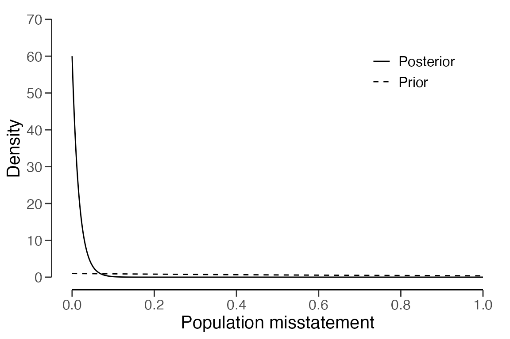

Planning statistical audit samples
Koen Derks
2023-08-17
Source:vignettes/sample-planning.Rmd
sample-planning.RmdIntroduction
This vignette illustrates how to use the planning()
function from the jfa package to calculate a minimum
sample size for audit sampling.

Required information
First, planning a minimum sample requires knowledge of the conditions that lead to acceptance or rejection of the population (i.e., the sampling objectives). Typically, sampling objectives can be classified into one or both of the following:
- Hypothesis testing: The goal of the sample is to obtain evidence for or against the claim that the misstatement in the population is lower than a given value (i.e., the performance materiality).
- Estimation: The goal of the sample is to obtain an accurate estimate of the misstatement in the population (with a minimum precision).
Second, it is advised to specify the expected (or tolerable) misstatements in the sample. The expected misstatements are the misstatements that you allow in the sample, while still retaining the desired amount of assurance about the population. It is strongly recommended to set the value for the expected misstatements in the sample conservatively to minimize the chance of the observed misstatements in the sample exceeding the expected misstatements, which would imply that insufficient work has been done in the end.
Next to determining the sampling objective(s) and the expected
misstatements, it is also important to determine the statistical
distribution linking the sample outcomes to the population misstatement.
This distribution is called the likelihood (i.e., poisson,
binomial, orhypergeometric). All three
aforementioned likelihoods are commonly used in an audit sampling
context, however, poisson is the default likelihood in
jfa because it is the most conservative of the
three.
Planning a sample
To illustrate how the planning() function can be used to
calculate a minimum sample size for audit sampling, we will first
demonstrate how to set up a sample with the purpose of hypothesis
testing and subsequently show how to plan a sample with the purpose of
estimation. In both cases, we will tolerate zero misstatements in the
sample.
Hypothesis testing
First, let’s take a look at how you can use the
planning() function to calculate the minimum sample size
for testing the hypothesis that the misstatement in the population is
lower than the performance materiality. In this example the performance
materiality is set to 5% of the total population value, meaning that the
population cannot contain more than 5% misstatement.
Sampling objective: Calculate a minimum sample size such that, when no misstatements are found in the sample, there is a 95% chance that the misstatement in the population is lower than 5% of the population value.
A minimum sample size for this sampling objective can be calculated
by specifying the materiality parameter in the
planning() function, see the command below. Next, a summary
of the statistical results can be obtained using the
summary() function. The result shows that, given zero
tolerable errors, the minimum sample size is 60 units.
##
## Classical Audit Sample Planning Summary
##
## Options:
## Confidence level: 0.95
## Materiality: 0.05
## Hypotheses: H₀: Θ >= 0.05 vs. H₁: Θ < 0.05
## Expected: 0
## Likelihood: poisson
##
## Results:
## Minimum sample size: 60
## Tolerable errors: 0
## Expected most likely error: 0
## Expected upper bound: 0.049929
## Expected precision: 0.049929
## Expected p-value: 0.049787Estimation
Next, let’s take a look at how you can use the
planning() function to calculate the minimum sample size
for estimating the misstatement in the population with a minimum
precision. The precision is defined as the difference between the most
likely misstatement and the upper confidence bound on the misstatement.
For this example, the minimum precision is set to 2% of the population
value.
Sampling objective: Calculate a minimum sample size such that, when zero misstatements are found in the sample, there is a 95% chance that the misstatement in the population is at most 2% above the most likely misstatement.
A minimum sample size for this sampling objective can be calculated
by specifying the min.precision parameter in the
planning() function, see the command below. The result
shows that, given zero tolerable errors, the minimum sample size is 150
units.
planning(min.precision = 0.02, expected = 0, conf.level = 0.95)##
## Classical Audit Sample Planning
##
## minimum sample size = 150
## sample size obtained in 151 iterations via method 'poisson'Bayesian planning
Performing Bayesian planning requires an input for the
prior argument in the planning() function.
Setting prior = TRUE performs Bayesian planning using a default
prior conjugate to the specified likelihood. For
example, the command below uses a default gamma(1, 1) prior distribution
to plan the sample.
##
## Bayesian Audit Sample Planning Summary
##
## Options:
## Confidence level: 0.95
## Materiality: 0.05
## Hypotheses: H₀: Θ > 0.05 vs. H₁: Θ < 0.05
## Expected: 0
## Likelihood: poisson
## Prior distribution: gamma(α = 1, β = 1)
##
## Results:
## Minimum sample size: 59
## Tolerable errors: 0
## Posterior distribution: gamma(α = 1, β = 60)
## Expected most likely error: 0
## Expected upper bound: 0.049929
## Expected precision: 0.049929
## Expected BF₁₀: 372.25You can inspect how the prior distribution compares to the expected
posterior distribution by using the plot() function. The
expected posterior distribution is the posterior distribution that would
occur if you actually observed the planned sample containing the
expected misstatements.
plot(plan)
The input for the prior argument can also be an object
created by the auditPrior function. If
planning() receives a prior for which there is a conjugate
likelihood available, it will inherit the likelihood from the prior. For
example, the command below uses a custom beta(1, 10) prior distribution
to plan the sample using the binomial likelihood.
prior <- auditPrior(method = "param", likelihood = "binomial", alpha = 1, beta = 10)
planning(materiality = 0.05, expected = 0, conf.level = 0.95, prior = prior)##
## Bayesian Audit Sample Planning
##
## minimum sample size = 49
## sample size obtained in 50 iterations via method 'binomial' + 'prior'